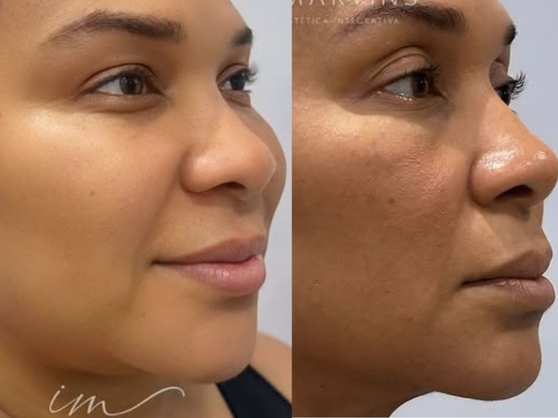
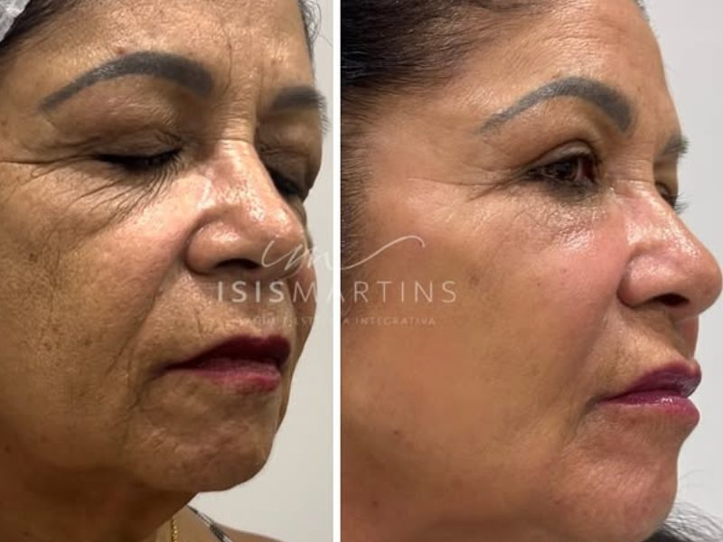
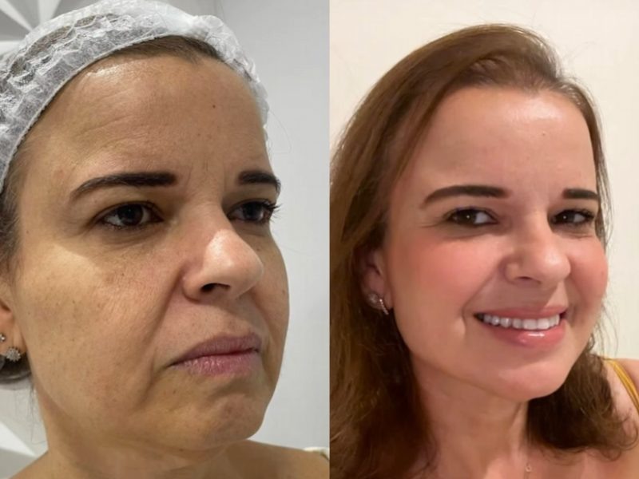
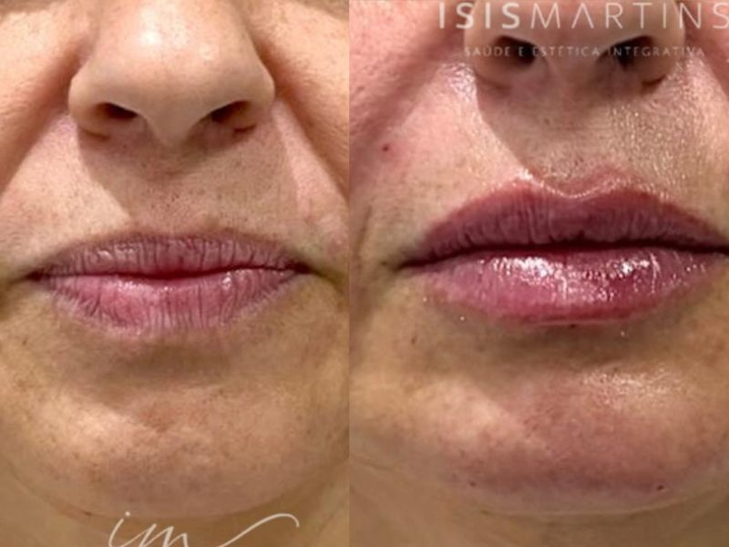
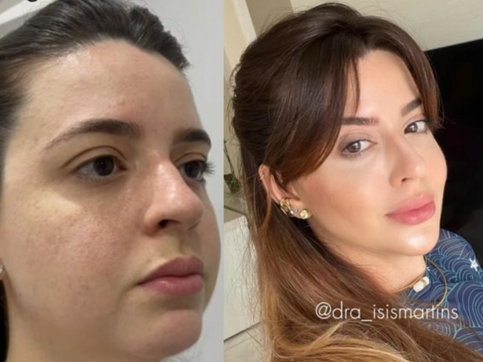
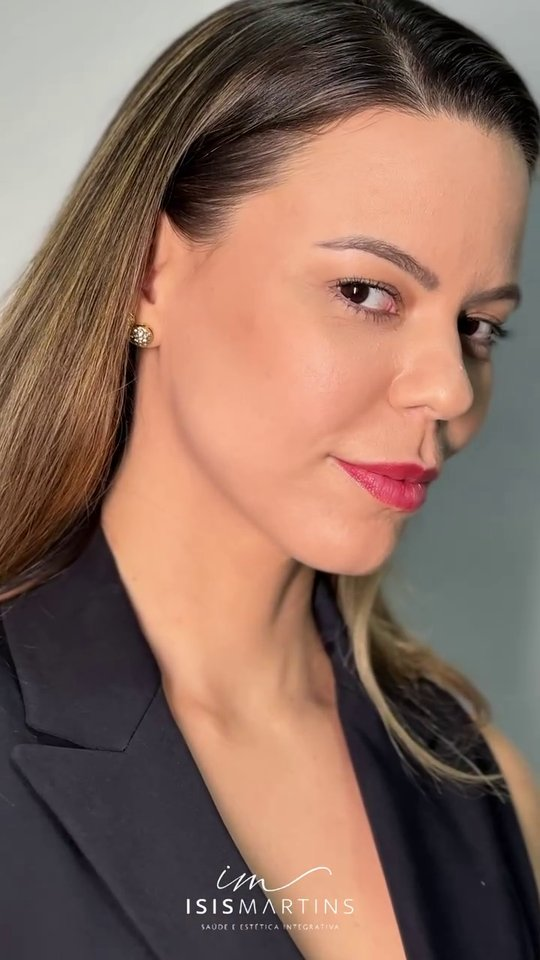
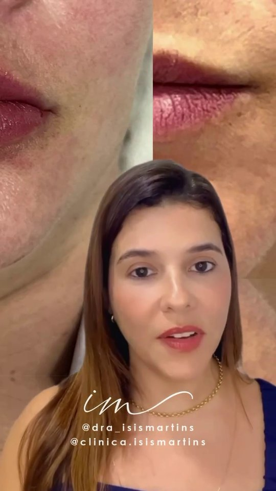
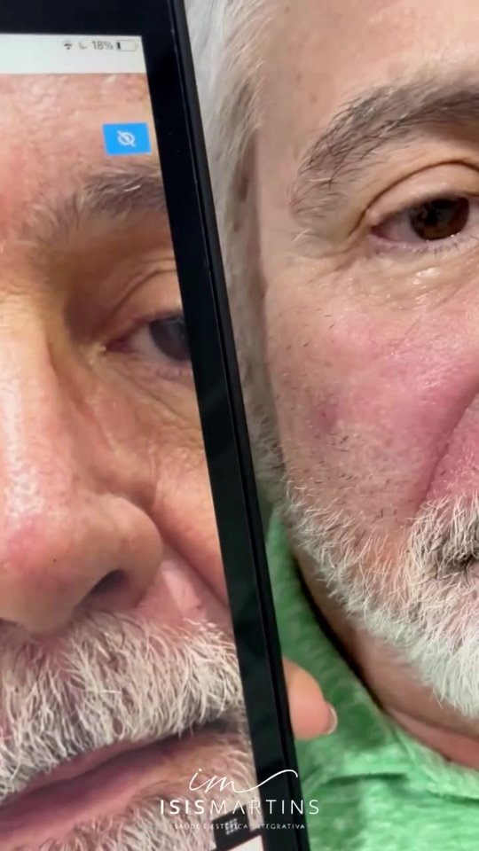
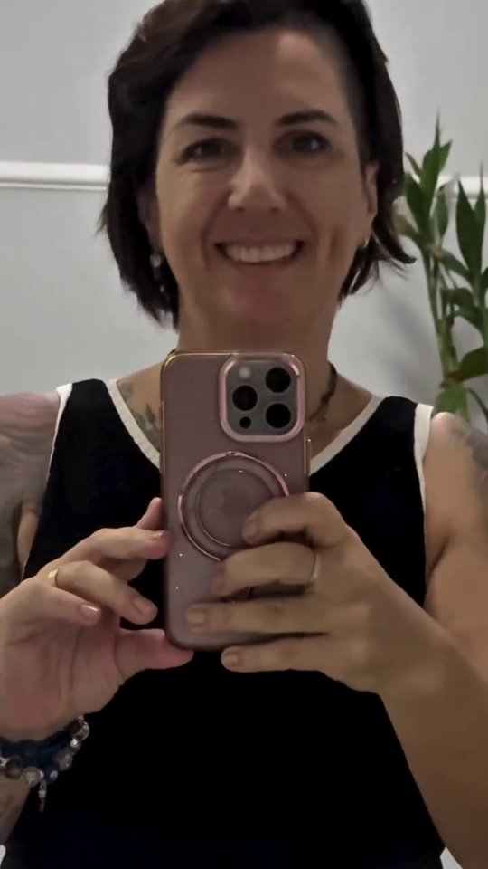

Rejuvenescimento natural que melhora
como você se sente — não só como você parece.
Dra. Ísis Martins é fisioterapeuta dermatofuncional com 20 anos de formação em saúde e mais de 5.000 pacientes atendidos em Aracaju. Aqui, cada procedimento é planejado para realçar o que você já tem — com ciência, com cuidado, e sem exagero.
O resultado não é um rosto novo.
É o seu rosto — mais você.
A maioria das pessoas que procura harmonização facial não quer mudar. Quer se reconhecer de novo — no espelho, nas fotos, no dia a dia. Dra. Ísis entende isso porque são 20 anos trabalhando com o corpo humano: primeiro como fisioterapeuta, hoje como especialista em estética avançada. O resultado não é um rosto novo. É o seu rosto — mais descansado, mais harmonioso, mais você.
Formação em ciências da saúde
Fisioterapeuta Dermatofuncional com certificações nacionais e internacionais e 20 anos de carreira clínica — não esteticista de cursinho.
+5.000 pacientes atendidos
Você vai para as mãos de alguém que já viu esse caso centenas de vezes e sabe exatamente o que fazer.
Naturalidade como princípio
Dra. Ísis trabalha para realçar sua beleza, nunca para criar outra. Resultado: percebem que você está bem, não que você "fez algo".
Produtos internacionais de referência
Restylane e Sculptra: as marcas mais usadas em rejuvenescimento de alta performance no mundo. Com décadas de estudos clínicos.
Atende mulheres e homens
Protocolos específicos para cada perfil, sempre preservando naturalidade e equilíbrio. Harmonização masculina com técnica adaptada.
Clínica própria no Jardim Europa
Espaço acolhedor, moderno e pensado em cada detalhe para que você se sinta bem desde a chegada. Centro Empresarial Premier.
Cada procedimento, planejado para o seu rosto.

Carro-chefe
Harmonização Facial
Combinação personalizada de técnicas — preenchimento, toxina botulínica e bioestimuladores — planejada para restaurar equilíbrio e naturalidade ao rosto.

Protocolo Premium
Restylane + Sculptra
Protocolo premium: volume imediato (Restylane) + estímulo de colágeno a longo prazo (Sculptra). Duas marcas de referência internacional no rejuvenescimento facial.

Facial
Toxina Botulínica
Aplicação precisa para suavizar linhas de expressão e prevenir o envelhecimento precoce, com manutenção total do movimento natural do rosto.

Facial
Preenchimento Labial
Reestruturação dos lábios com ácido hialurônico — volume, definição e hidratação adaptados à proporção do seu rosto.
Masculino
Harmonização Masculina
Protocolo específico para homens: definição de maxilar, suavização de linhas e correção de assimetrias com técnica adaptada aos traços masculinos.

Cuidado da Pele
Lumine Skin
Protocolo de luminosidade e saúde da pele para tratar manchas, melasma e perda de viço com ativos de alto desempenho.
Simples, sem pressão, sem compromisso.
Você manda uma mensagem
Sem compromisso, sem formulário complicado. Em poucos minutos já agendamos sua avaliação no WhatsApp.
Vem para a avaliação
Na clínica no Jardim Europa, Dra. Ísis analisa seu rosto, ouve o que você quer e — principalmente — o que você não quer.
Recebe um plano personalizado
Com honestidade total: o que recomenda fazer, o que não precisa, e o que esperar do resultado. Sem script de vendas.
Você decide com calma
Se optar por seguir, o procedimento é realizado no mesmo espaço — com conforto, segurança e os melhores produtos do mercado.
"A avaliação existe para entender o que faz sentido para o seu momento — não para vender mais procedimentos."
Agendar minha avaliaçãoVeja o que acontece quando ciência e naturalidade se encontram.
Casos clínicos reais — pacientes reais, resultados reais. Sem edição excessiva, sem filtro.

Restylane + Sculptra — resultado natural

Boca Jovem — volume com naturalidade

Resultado real — 1ª sessão
Reestruturação labial com naturalidade

"Me senti tão bem ao me olhar no espelho"
Quer ver o que podemos fazer pelo seu rosto?
Agendar minha avaliaçãoO que dizem quem já se cuidou aqui.
"Fui atendida por uma profissional de excelência, sempre muito preocupada com o bem estar de seus pacientes. Muito obrigada Dra. Ísis por toda atenção e cuidados!!!"
Renata Ribeiro
Google Reviews · Verificado
"Excelente atendimento! Dra. Ísis é uma profissional muitíssimo preparada e atenciosa com os pacientes, sem falar da equipe que também não posso deixar de fora."
Natalia Samili
Google Reviews · Verificado
"Faço tratamento corporal e facial para rejuvenescimento e tratamento do meu melasma e os resultados são excelentes, uma equipe comprometida e atenciosa desde a recepção."
Marbenycunha Cunha
Google Reviews · Verificado
"Atendimento maravilhoso. Gostei muito de todos os procedimentos que realizei e recomendo sempre."
Klenyse Galdino
Google Reviews · Verificado
"Um tratamento diferenciado. A sensação é que somos únicos. Me senti acolhida e amei o resultado."
Marta Ribeiro Oliveira
Google Reviews · Verificado
"A sensação é que somos únicos."— Marta Ribeiro Oliveira · Google Reviews ★★★★★
+5.000
Pacientes atendidos
Dra. Ísis Martins
Antes de se tornar especialista em harmonização facial, Dra. Ísis Martins passou 20 anos como fisioterapeuta — estudando o corpo humano, entendendo como ele funciona, aprendendo a olhar para além do que aparece na superfície. Essa base científica é o que diferencia o trabalho dela: ela não aplica produto. Ela analisa, planeja e cuida.
Com certificações nacionais e internacionais — incluindo o congresso Transformando Faces (BRUS) — e mais de 5.000 pacientes atendidos em Aracaju, Dra. Ísis construiu uma reputação baseada em resultado real e atendimento humanizado. Recentemente, inaugurou sua própria clínica no Jardim Europa: um espaço pensado em cada detalhe para que o paciente se sinta seguro, acolhido e bem cuidado desde a primeira visita.
"Minha história não começou pronta. Começou com coragem, estudo e propósito."
O que separa resultado real de promessa vazia.
Fisioterapeuta Dermatofuncional — base científica que a maioria não tem
Qualquer pessoa pode fazer um curso de harmonização hoje e se chamar de "especialista". Dra. Ísis tem graduação em fisioterapia, 20 anos de carreira clínica e especialização em estética dermatofuncional — entende anatomia, fisiologia e riscos em um nível completamente diferente. Isso é o que separa um resultado bonito de um resultado seguro.
+5.000 pacientes atendidos — experiência que não se improvisa
Volume de atendimento importa em estética avançada. Cada rosto é diferente. Quando você se senta com Dra. Ísis, você é avaliada por alguém que já viu esse padrão centenas de vezes — e sabe exatamente qual abordagem funciona e qual evitar.
Restylane e Sculptra — referência internacional de segurança e resultado
Não é qualquer ácido hialurônico. Restylane e Sculptra são as marcas mais respeitadas no rejuvenescimento facial premium: aprovadas internacionalmente, com décadas de estudos clínicos. Dra. Ísis escolheu trabalhar com o que existe de melhor — e isso faz diferença no resultado e na durabilidade.
Certificações nacionais e internacionais — nunca parou de estudar
O congresso Transformando Faces (BRUS) e outras certificações não são adornos no currículo — são a garantia de que as técnicas usadas estão alinhadas com o que existe de mais avançado na estética facial. Em um campo que evolui rápido, isso protege você.
Clínica própria no Jardim Europa — um espaço construído para cuidar
Dra. Ísis inaugurou sua própria clínica no Centro Empresarial Premier — aconchegante, moderna e planejada para proporcionar a melhor experiência. Não é uma sala alugada. É um ambiente construído com o propósito de fazer você se sentir segura e bem cuidada.
Tire suas dúvidas antes de agendar.
Você merece se sentir bem ao se olhar no espelho.
Com segurança, naturalidade e o cuidado de alguém que passou 20 anos estudando o corpo humano antes de tocar no seu rosto.